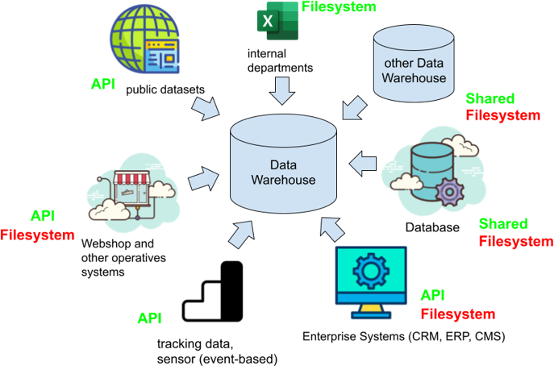
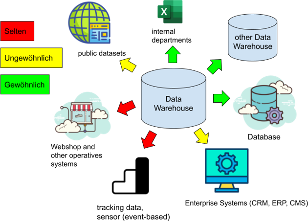
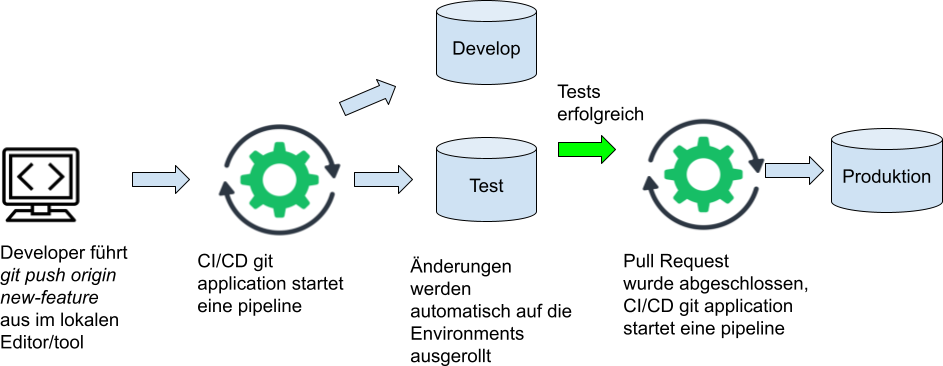
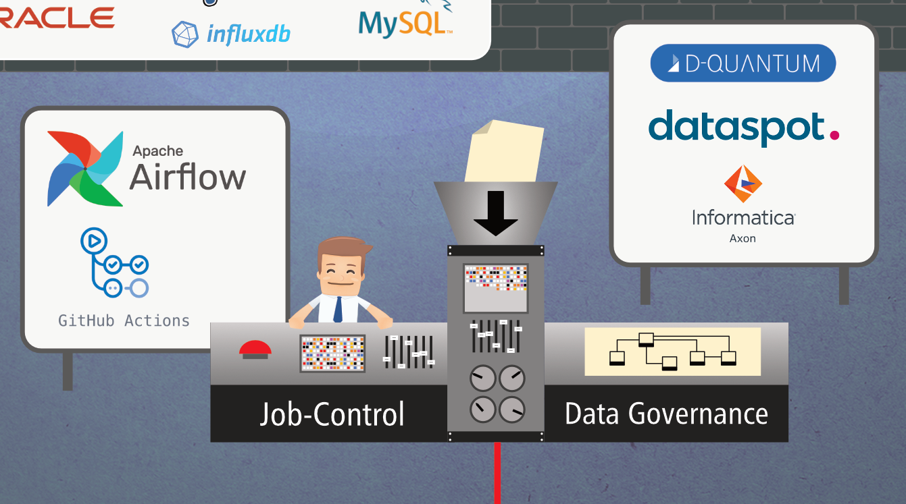
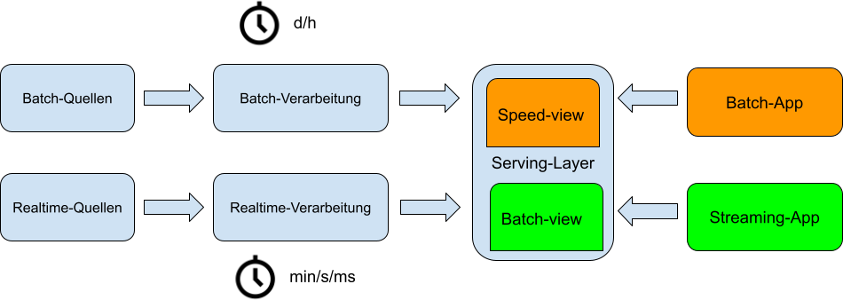
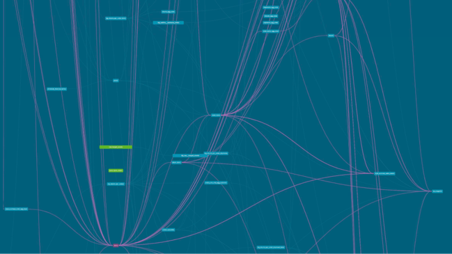
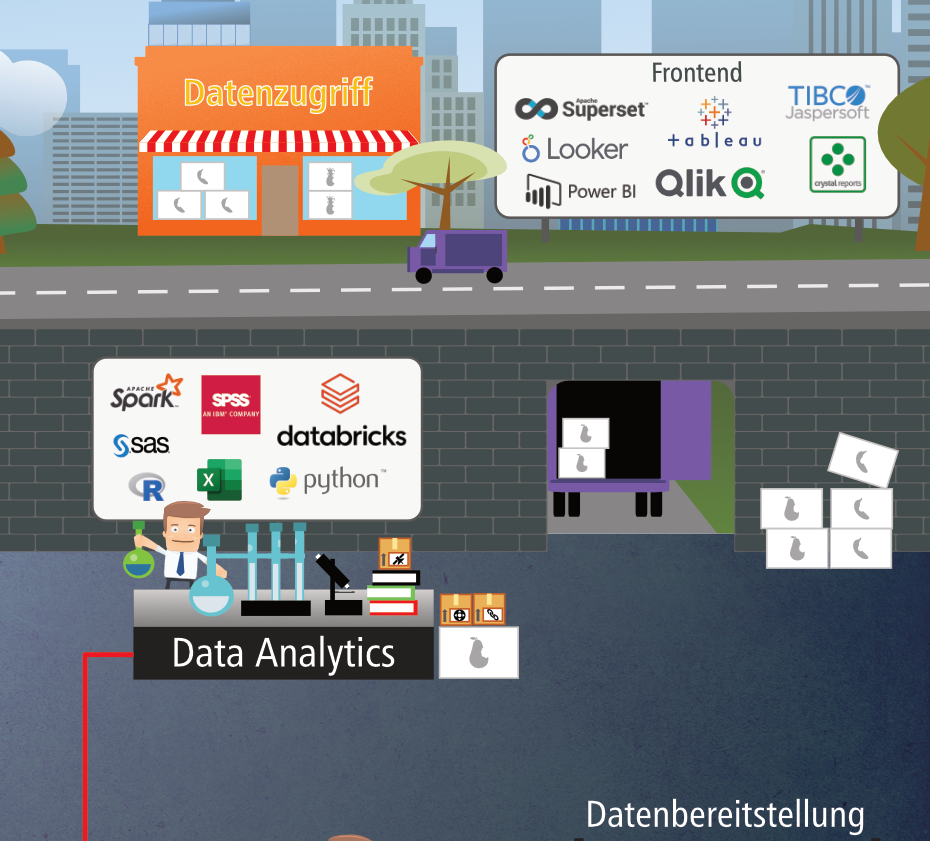

Business Intelligence
Technische Grundlagen
Quellen und Heterogenität der Daten
- Operative Systeme
- Web
- Öffentliche und interne Quellen
- Dateien
- Lieferanten der Daten für das Data Warehouse
- Gehören nicht direkt zum DWH
- Können intern (Unternehmen) oder extern (z.B. staatl. Einrichtung) sein
- Heterogen bzgl. Struktur, Inhalt und Schnittstellen (Datenbanken, Dateien)
- Auswahl der Quellen und Qualität der Daten von besonderer Bedeutung
Herausforderung für Data Mart und Reporting Daten müssen Homogen transformiert und konsumiert werden in übergreifenden Strukturen
Klassifikationen Daten
- Herkunft: intern, extern
- Zeit: aktuell, historisch
- Nutzungsebene: Primärdaten, Metadaten
- Inhalt: Zahl, Zeichenkette, Grafik, Referenz, Dokument
- Darstellung: numerisch, alphanumerisch, BLOB
- Sprache und Zeichensatz
- Vertraulichkeitsgrad
Einige dieser Klassifikationen wirken sich auf die Data Mart Struktur und das Report Design aus
Faktoren der Datenauswahl
- Qualität der Quelldaten
- Verfügbarkeit (rechtlich, sozial, technisch)
- Preis für Erwerb der Daten (speziell bei externen Quellen)
Datenauswahl einer Anbindung wird oftmals auf Reporting Anforderungen aufgebaut (Top-Down)
Art der Daten
- Snapshots: Quelle liefert immer kompletten Datenbestand
- Neuer Lieferantenkatalog, neue Preisliste
- Änderungen erkennen
- Historie korrekt abbilden
- Logs: Quelle liefert jede Änderung
- Transaktionslogs, Anwendungsgesteuertes Logging
- Änderungen effizient einspielen
- Netto-Logs: Quelle liefert Netto-Änderungen
- Katalogupdates, Snapshot-Deltas
- Keine vollständige Historie möglich
- Änderungen effizient einspielbar
Datenquellen

Formen des Datenaustauschs
- Dateien in verschiedenen Filesystemen (Lake Storage, SFTP, …)
- Automatisch exportiert (JSON, XML, parquet, csv)
- Manuell erstellt (Excel, plain text)
- APIs
- Request body enthält Daten in fileformats (JSON, XML, plain text)
- Streaming
- Shared database (direkter Zugriff oder replication)
Erwartung und Realität von Anbindungen

Aufbereitungsschritte der Daten bis zum Report
- Primärschlüssel definieren und festlegen
- Historisierung der Daten
- Vereinheitlichung der Datentypen und Attributenamen
- Gewährleistung der Datenqualität durch Transformationen
- Deduplizierung
Schritte werden abhängig von DWH Architektur und Datenmodellierung in anderen DWH-Layern durchgeführt (Data Vault, Persistent Staging Area)
Fragestellungen bei Anbindungen
- In welcher Schicht im DWH werden Daten bereinigt und gefiltert?
- Wann wird die Datenqualität geprüft?
- Muss Datenqualität über den gesamten Lade Prozess des DWHs geprüft werden?
- Müssen Business Rules und Transformationen schon vor dem Laden angewendet werden?
Einfluss auf diese Fragen haben die Datenschutzrechtliche Einordung der Daten, die Integrität, erlaubte Fehlertoleranz, die Genauigkeit der Daten, Kosten und die Performance.
Push vs. Pull
- PULL
- Zum festgelegten Zeitpunkt als batch werden Daten aus der Quelle abgerufen
- Re-run jederzeit möglich
- Kein Realtime
- PUSH
- Nahe oder im Quellsystem integrierte Komponente, die Daten aufgrund eines Events überträgt
- Zielsystem muss durchgängig verfügbar sein
ETL vs. ELT
- ELT entstand aus Big Data und cloud-Ansätzen
- Höhere Rechenkapazitäten und Parallelisierungstechniken ermöglichen es Rohdaten erst zu laden und im Zielsystem zu transformieren
- ETL klassischer DWH Ansatz
- Bevor Daten ins DWH geladen werden finden schon Transformationen statt

Warum ELT und ETL tools sinnvoll sind
- Darstellung visuelle Datenfluss (Lineage)
- GUIs und Editoren mit Einblick auf Datenbank, Bessere Benutzererfahrung
- Datenerfassung, -transformation und -konsolidierung automatisieren
- Komponenten oder Funktionalitäten zur Datenbereinigung und Auditing
- Wiederverwendbarkeit von Logiken in templates
Herausforderungen der ETL/ELT Prozesse
- Starke Heterogenität der Quellsysteme und Daten
- Verschiedene Arten der Anbindung und Formate
- Heterogene Daten zu einem konsistenten Data Mart zusammensetzen
- Lade- und Aktualisierungszeitpunkte synchronisieren (Welche Daten müssen zu welchem Zeitpunkt im Report vorliegen)
Modernes Data Warehouse auch als Quelle

Development und Deployment

Metadaten-Repository
Repositories sind versionierte Verzeichnisse um unterschiedliche Versionen von Dateien zu verwalten.
Im Data Warehouse enthält ein Metadaten-Repository:
- Transformationslogiken
- Objekttypen(Tabellen, Views, …)
- Attribute und Datentypen
- Rechte und Rollen
- Prozeduren, Parameter
- …
Metadaten-Repository Code-Basis
- Code
- SQL statements und Skripte werden von den Entwicklern selbst geschrieben und ins Repository gepusht
- Entwickler arbeiten lokal oder webbasiert mit einem gängigen Editor
- Low-Code
- Ein Templating- oder Automatisierungstool übernimmt das Erstellen von SQL code und generiert SQL-Skripte während der Laufzeit aus den templates
- Entwickler arbeiten lokal oder webbasiert mit einem gängigen Editor oder in der GUI des Tools
- Es werden die templates im Repository hinterlegt
- No-Code
- Automatisierungstool das per GUI und bereitgestellten Funktionalitäten SQL-code vollständig generiert
- Repository existiert wird aber vom Tool befüllt und genutzt, der Entwickler greift nicht direkt auf dieses zu
Code Beispiel
Rohe SQL-Skripte, die direkt auf der DB ausgeführt werden
WITH row_rank_1 AS (
SELECT rr."ARTICLE_ARTICLEGROUP_HK", rr."ARTICLE_HK", rr."ARTICLEGROUP_HK", rr."CREATED_DTTM", rr."CREATED_SOURCE",
ROW_NUMBER() OVER(
PARTITION BY rr."ARTICLE_ARTICLEGROUP_HK"
ORDER BY rr."CREATED_DTTM"
) AS row_number
FROM CORE_DEV.dev.source_0_article AS rr
QUALIFY row_number = 1
),
row_rank_2 AS (
SELECT rr."ARTICLE_ARTICLEGROUP_HK", rr."ARTICLE_HK", rr."ARTICLEGROUP_HK", rr."CREATED_DTTM", rr."CREATED_SOURCE",
ROW_NUMBER() OVER(
PARTITION BY rr."ARTICLE_ARTICLEGROUP_HK"
ORDER BY rr."CREATED_DTTM"
) AS row_number
FROM CORE_DEV.dev.source_1_article AS rr
QUALIFY row_number = 1
),
Low-Code Beispiel
Beispiel DBT (Transformation Tool) nutzt Jinja templates und generiert daraus den SQL-Code
{%- set source_model = ["source_0_article",
"source_1_article"] -%}
{%- set src_pk = "ARTICLE_ARTICLEGROUP_HK" -%}
{%- set src_fk = ["ARTICLE_HK", "ARTICLEGROUP_HK"] -%}
{%- set src_ldts = "CREATED_DTTM" -%}
{%- set src_source = "CREATED_SOURCE" -%}
{{ dbtvault.link(src_pk=src_pk, src_fk=src_fk, src_ldts=src_ldts,
src_source=src_source, source_model=source_model) }}
No-Code Beispiel

Arbeiten mit einem Code Repository (git)
git ist ein Versionierung-Kontroll- und Managementsystem von Dateien
- Verteiltes System und kein zentraler Server notwendig
- Verschiedene Anbieter von git
- Azure DevOps, AWS-CodeCommit, Google Cloud-Quellrepositorys
- GitHub
- Gitlabs
- Bitbucket
- …
git Kommandos
git clone {Pfad zum remote repository}- Erstellt eine Arbeitskopie auf dem lokalen Rechner des Entwicklers
git checkout {branchname}- Wechselt den Entwicklungszweig im Repository
git add {files or directory}- Fügt Änderungen zur Stage hinzu bevor ein commit erstellt wird
git commit -m "{message}"- Alle gestagten files werden in einen snapshot verpackt, ein commit entspricht einer Änderung in der Historie
git merge- Zwei auseinanderlaufende branches werden wieder vereint
git push- Der lokale branch wird auf dem remote Repository veröffentlicht
git pull- Lädt den aktuellen Stand des branches aus dem remote Repository und merged mit dem lokalen branch
Beispiel Workflow in git
- git clone ssh://user@host/path/to/repo.git
- git checkout main
- git fetch origin
- git reset --hard origin/main
- git checkout -b new-feature
- Entwickler ändert files
- git push origin new-feature
- git status
- git add {some-file}
- git commit
Beispiel Workflow in git
- Entwickler ändert weitere files
- git status
- git add {some-file}
- git commit
- git pull
- git merge origin/main
- git push origin new-feature
- Entwickler erstellt Pull Request im Management Tool z.B. Azure DevOps
- Test und Review des feature branches von einem weiteren Entwickler und anschließend merge in main
Deployment und Test automation
Ein DWH besteht im Regelfall nicht nur aus einer produktiven Instanz, folgende gängige Environment Architekturen existieren
- 2-Stages: Development und Production
- Entwickler nutzen Development zum Entwickeln und Testen
- 3-Stages: Development, Test und Production
- Entwickler nutzen Development zum Entwickeln
- Test zum überprüfen der Änderungen
Entscheidung der Architektur hängt ab von Kosten, Datenschutz und Testmanagement
Deployment und Test automation

Deployments in BI Projekten
- Environment Strategien:
- Blue-Green Deployment
- Jeder Entwickler hat ein Environment
- Git-Branching:
- Release-branches
- Zusätzlicher develop-branch neben main/master branch
- Trunk based deployment branch
- Organisatorisches:
- Deployment Time-Slots
- Manuelles vs. automatisiertes Deployment
- BI-Projekte entwickeln sich stärker hin zu professioneller Softwareentwicklung
Datenbanken
Ein Data Warehouse ist keine Datenbank!
Ein Data Warehouse benötigt eine Datenbank und ist dabei die zentrale Komponente.
Arten von Datenbanken:
- Relational (Oracle, MySQL, MSSQL, Postgres, Snowflake)
- Time Series (InfluxDB)
- Hierarchisch (IMS)
- Netzwerkartig (neo4j)
- Objektorientiert (db4o)
- No-SQL oder Dokumenten-orientiert (MongoDB)
- Key-Value (Redis)
- Wide column (Hbase)
- Search Engines (Elasticsearch)
Welche Datenbank passt für mein Data Warehouse?
Folgende Aspekte müssen berücksichtigt werden:
- Datenmenge
- Flüchtigkeit der Daten
- Verschachtelung und Hierarchien der Datenbasis
- Flexibilität der Datenstrukturen
- Cloud oder on-Premise
- Skillset der Developer
Data Streaming
- Ursprung der Daten:
- IoT wie z.B. Kassensysteme, Sensoren, Logs, tracking auf websites
- Herausforderungen für ein DWH:
- Menge und Integrität der Daten können schwanken und sind oftmals schwer einschätzbar (Blockaden möglich)
- Reihenfolge und zeitliche Abfolge sollte gewährleistet werden

Master Data Management MDM
- Prinzip des Golden Records
- Beispiel: Alle Kundendaten aus verschiedenen Systemen des Unternehmens werden gemerged um die Stammdaten eines Kunden sauber abzubilden
- Eine einheitliche Defintion von Ländercodes und Länder-Bezeichungen soll übergreifend im Unternehmen verwendet werden
- MDM hat ein eigenen Tool-Stack und ergänzt ein Data Warehouse oftmals
Data Katalog
Ein Data Katalog ist ein zentraler Dokumentation und Metadaten Service. Es werden folgende Informationen in diesem hinterlegt:
- Wer hat Zugriff auf welche Daten? Datenschutz relevante Informationen Zugangsdaten und Zugangsmöglichkeiten (Rechte und Rollen)
- Infos zu den Datenquellen
- Tabellennamen, Attribute, Wertebereiche, Datentypen
- Business Logiken von Objekten oder KPIs
- Lineage der Daten
Jobsteuerung
- Gehört oftmals zum Funktionsumfang von ETL/ELT Tools
- In der Cloud als Service
- AWS Step Functions
- Azure Data Factory
- Google Cloud Scheduler
- OpenSource
- Apache Airflow
- Apache NiFi
Jobsteuerung Evolution Batch
Klassisches DWH ohne Streaming nutzt meist nur batch loading-jobs in bestimmten Zeit-Intervallen (daily, nightly, alle 4 oder 12 Stunden)
Jobsteuerung Evolution Lambda
Real-time und streaming Datenquellen wurden zuerst im Big Data Umfeld genutzt aber werden immer stärker im Data Warehouse Kontext verwendet
Lambda Architektur: Batch-jobs mit Real-time-jobs werden vereinigt in einem integrierenden Serving Layer

Jobsteuerung Evolution Kappa
Die neuste Evolution ist die Kappa Architektur die alle Daten event-basiert nach dem gleichen Verfahren, code-Basis und Infrastruktur verarbeitet, dabei spielt die Datenmenge und Art des Datentransfers eine untergeordnete Rolle

Metadaten zur Steuerung
Workflow oder Scheduling Tools mit DAG (Directed Acyclic Graph) nutzen
- Load-Reihenfolge der Objekte im DWH fest
- ETL Tools haben im Normalfall integrierte DAG Funktionalität
- Alternative: Internes Metadaten-Framework das mit Proceduren und einen Workflow-Tool (Azure Data Factory) gesteuert wird (Interne-Entwicklung, hohe Komplexität und Wartung)

Alerting und Monitoring
- Gehört zum Funktionsumfang von Enterprise ETL/ELT Tools
- Zumeist auf Basis von Metadaten und selbstgeschriebenen SQL-Test, die Ergebnisse in SQL-Tabellen wegschreiben
- Cloudbasierte Web-App greift auf die geloggten Tabellen zu und versendet Emails oder schreibt in chats (MS Teams)
- Datenbanken-Anbieter haben ein technisches Monitoring bereits eingebaut
- Fachliches Monitoring ➡️ Reports
Reporting und Analytics

Zusammenfassung
- Anbindungen
- Quellsysteme, Datenformate
- Push vs. Pull
- ETL/ELT
- Development und Deployment
- Git und Repositories
- Deployment und test automation
- Datenbanken
- Data Streaming
- Steuerungs- und Informationsmanagement
- Data Katalog und MDM
- Metadatensteuerung
- Monitoring